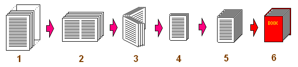
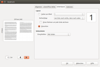

Broschürendruck
Zum Verständnis dieses Artikels sind folgende Seiten hilfreich:
Um aus einer Datei eine Broschüre oder ein ganzes Buch zu drucken, gibt es verschiedene Wege. Einige sollen auf dieser Seite vorgestellt werden. Die meisten Programme arbeiten mit PostScript- oder PDF-Dateien. Es wird aber auch ein Weg vorgestellt, mit LibreOffice bzw. OpenOffice eine Broschüre auszudrucken.
Grundsätzlich erfolgt der Vorgang in mehreren Schritten: Zunächst werden die Dateien verkleinert und in einer neuen Reihenfolge auf ein gedrehtes Format sortiert (2). Daraufhin werden die Blätter in der Mitte gefaltet (3) und die fertige Broschüre geheftet oder vernäht (4). Werden dicke Bücher gedruckt, werden mehrere Broschüren übereinandergelegt (5) und erneut gebunden (6).
|  |
| Bildquelle: Bookbinder |
Grafische Programme¶
|  |
| Druckdialog von LibreOffice |
LibreOffice bzw. OpenOffice.org¶
Nachdem ein mehrseitiges Dokument in LibreOffice bzw. OpenOffice geöffnet wurde, muss der Druck-Dialog geöffnet werden ( Strg + P ). Im Druck-Dialog kann auf dem Schalter "Eigenschaften" die Ausrichtung auf "Querformat" geändert werden. Weiter mit Ok und unter dem Reiter "Seitenlayout" oder "Optionen" den Modus auf "Broschüre" stellen.
Bookbinder¶
Das plattformübergreifende Java-Programm Bookbinder  liegt mittlerweile in Version 3.0 vor und kann auf der Homepage heruntergeladen werden. Es arbeitet ausschließlich mit PDF-Dateien als Ausgangsmaterial. Eine Schritt-für-Schritt-Anleitung findet sich ebenfalls auf der Homepage .
liegt mittlerweile in Version 3.0 vor und kann auf der Homepage heruntergeladen werden. Es arbeitet ausschließlich mit PDF-Dateien als Ausgangsmaterial. Eine Schritt-für-Schritt-Anleitung findet sich ebenfalls auf der Homepage .
Boomaga¶
Boomaga (Booklet manager) ist ein virtueller Drucker, mit dem die Ausgabe eines Druckauftrags angezeigt werden kann, bevor diese an einen Drucker übergeben wird. Durch seine Position zwischen Anwenderprogramm und Drucker erlaubt es eine universell nutzbare Druckvorschau auch bei Anwendungen, in denen diese Funktion nicht vorgesehen ist. Zusätzlich kann das Layout des Ausdrucks noch angepasst (Druck mehrerer Seiten auf einer inkl. Broschürendruck) und mehrere Druckaufträge zu einem zusammengefasst werden.
Bookletimposer¶
Das aus den offiziellen Paketquellen installierbare Programm BookletImposer verwandelt PDF-Dateien mit fortlaufender Seitenzahl in eine Broschüren- oder Booklet-Datei und umgekehrt. Sehr simpel, stabil und schnell. Die konvertierte Datei kann dann mit einem beliebigen PDF-Betrachter gedruckt werden (sofern dieser eine Druckfunktion enthält).
Folgendes Paket kann ab Ubuntu 14.04 installiert werden [1]:
bookletimposer (universe)
 mit apturl
mit apturl
Paketliste zum Kopieren:
sudo apt-get install bookletimposer
sudo aptitude install bookletimposer
Anschließend erfolgt der Programmstart bei Ubuntu-Varianten mit einem Anwendungsmenü über " Büro -> bookletimposer".
Kommandozeile¶

PDFjam¶
Das Paket PDFjam beinhaltet eine Sammlung von Programmen und Skripten für die Kommandozeile bzw. das Terminal, mit denen man PDF-Dateien manipulieren kann. Mit der Installation von PDFjam wird unter anderem auch das Skript pdfbook installiert. Mit den richtigen Parametern lassen sich daraus Broschüren drucken (siehe auch die Programm-Dokumentation ).
Soll beispielsweise ein A4-Dokument als A5-Broschüre ausgegeben werden, kann der folgende Befehl genutzt werden [2]:
pdfbook -2 EINGABE.ps AUSGABE.pdf
Wird pdfbook ohne Parameter gestartet, wird eine kurze Hilfe ausgegeben.
psutils¶
Mittels psutils lassen sich Broschüren aus PostScript-Dateien (.ps) erzeugen. Dazu werden die Programme psbook (richtige Anordnung der Dateien) und psnup (Zusammenfassen der Seiten) eingesetzt. Da beide Skripte lediglich mit PostSript arbeiten, werden zusätzlich die Programme ps2pdf und pdf2ps aus Ghostscript benötigt, wenn eine PDF-Datei gedruckt werden soll:
psutils
ghostscript
mit apturl
Paketliste zum Kopieren:
sudo apt-get install psutils ghostscript
sudo aptitude install psutils ghostscript
Dann kann man mit folgenden Befehlen ein A4-Dokument in eine A5-Broschüre umwandeln:
pdf2ps EINGABE.pdf EINGABE.ps psbook EINGABE.ps EINGABE_SORTIERT.ps psnup -2 EINGABE_SORTIERT.ps BROSCHUERE.ps ps2pdf BROSCHUERE.ps BROSCHUERE.pdf
Soll ein dickes Buch gebunden werden, ist es sinnvoll (wie in Schritt 4 bzw. 5 im obigen Bild), ein Buch aus mehreren dünnen Broschüren zusammenzusetzen. Dafür muss bei psbook die Option -s mitgegeben werden. Dann folgt die Angabe, wie viele Seiten maximal zu einer Broschüre zusammengesetzt werden sollen. Hier ein Befehl für 25 Blätter (= 100 Seiten):
psbook -s100 EINGABE.ps EINGABE_SORTIERT.ps
Links¶
Booklet printing in Ubuntu made easy
- Anleitung zum Einrichten eines generischen Broschürendruckers; Blogbeitrag, 03/2012Bücher, Broschüren und Booklets – Werkzeuge für PDF und Postscript (Teil 4)
 - LinuxUser, 11/2009
- LinuxUser, 11/2009PDF - Programmübersicht
Druckwerkzeuge
 Übersichtsartikel
Übersichtsartikel
- Erstellt mit Inyoka
-
 2004 – 2017 ubuntuusers.de • Einige Rechte vorbehalten
2004 – 2017 ubuntuusers.de • Einige Rechte vorbehalten
Lizenz • Kontakt • Datenschutz • Impressum • Serverstatus -
Serverhousing gespendet von